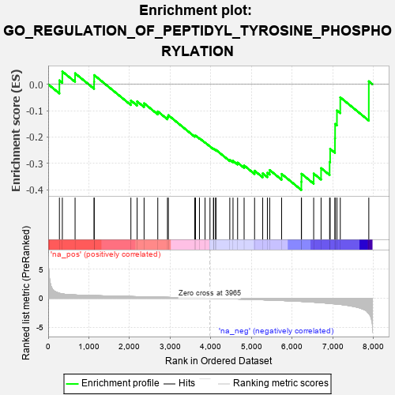
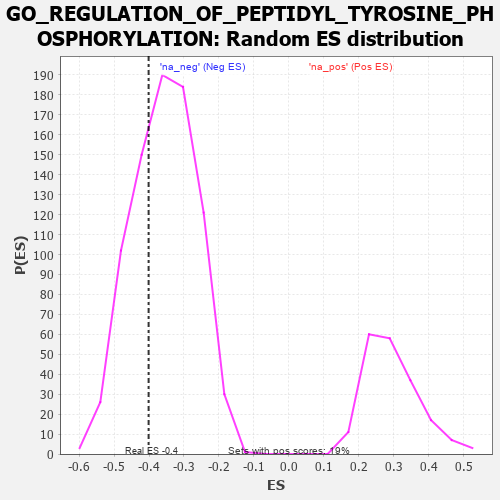

| | | Dataset | 7d |
| Phenotype | NoPhenotypeAvailable |
| Upregulated in class | na_neg |
| GeneSet | GO_REGULATION_OF_PEPTIDYL_TYROSINE_PHOSPHORYLATION |
| Enrichment Score (ES) | -0.40123007 |
| Normalized Enrichment Score (NES) | -1.1278913 |
| Nominal p-value | 0.32094175 |
| FDR q-value | 0.72765976 |
| FWER p-Value | 1.0 |
Table: GSEA Results Summary

Fig 1: Enrichment plot: GO_REGULATION_OF_PEPTIDYL_TYROSINE_PHOSPHORYLATION
Profile of the Running ES Score & Positions of GeneSet Members on the Rank Ordered List
| PROBE | GENE SYMBOL | GENE_TITLE | RANK IN GENE LIST | RANK METRIC SCORE | RUNNING ES | CORE ENRICHMENT | | 1 | HGF | | | 276 | 0.870 | 0.0147 | No |
| 2 | CNOT7 | | | 348 | 0.750 | 0.0485 | No |
| 3 | HES5 | | | 661 | 0.571 | 0.0416 | No |
| 4 | SRC | | | 1128 | 0.459 | 0.0090 | No |
| 5 | NCK2 | | | 1131 | 0.458 | 0.0348 | No |
| 6 | VPS25 | | | 2033 | 0.300 | -0.0617 | No |
| 7 | SYK | | | 2186 | 0.278 | -0.0650 | No |
| 8 | MIF | | | 2357 | 0.252 | -0.0721 | No |
| 9 | ZGPAT | | | 2694 | 0.200 | -0.1031 | No |
| 10 | ACVR1 | | | 2932 | 0.161 | -0.1238 | No |
| 11 | SOCS4 | | | 2953 | 0.157 | -0.1174 | No |
| 12 | DOK7 | | | 3603 | 0.059 | -0.1959 | No |
| 13 | CBL | | | 3621 | 0.056 | -0.1948 | No |
| 14 | HSF1 | | | 3718 | 0.039 | -0.2047 | No |
| 15 | DGKQ | | | 3856 | 0.020 | -0.2209 | No |
| 16 | CHMP6 | | | 3977 | -0.003 | -0.2358 | No |
| 17 | TAL1 | | | 4064 | -0.018 | -0.2456 | No |
| 18 | SFRP2 | | | 4065 | -0.018 | -0.2446 | No |
| 19 | MTOR | | | 4114 | -0.025 | -0.2492 | No |
| 20 | ABL1 | | | 4125 | -0.027 | -0.2490 | No |
| 21 | ERCC6 | | | 4464 | -0.087 | -0.2866 | No |
| 22 | NTRK2 | | | 4543 | -0.104 | -0.2906 | No |
| 23 | FGFR3 | | | 4656 | -0.129 | -0.2974 | No |
| 24 | FBXW7 | | | 4816 | -0.161 | -0.3082 | No |
| 25 | RAP2C | | | 5073 | -0.218 | -0.3281 | No |
| 26 | EPHA4 | | | 5273 | -0.265 | -0.3381 | No |
| 27 | DLG4 | | | 5388 | -0.293 | -0.3358 | No |
| 28 | CBLB | | | 5445 | -0.306 | -0.3255 | No |
| 29 | PDCL3 | | | 5738 | -0.388 | -0.3402 | No |
| 30 | MVP | | | 6223 | -0.543 | -0.3703 | Yes |
| 31 | EHD4 | | | 6227 | -0.545 | -0.3396 | Yes |
| 32 | ACE | | | 6526 | -0.674 | -0.3389 | Yes |
| 33 | EGFR | | | 6708 | -0.765 | -0.3181 | Yes |
| 34 | CSPG4 | | | 6918 | -0.878 | -0.2946 | Yes |
| 35 | LRP8 | | | 6931 | -0.889 | -0.2455 | Yes |
| 36 | PIBF1 | | | 7049 | -0.966 | -0.2053 | Yes |
| 37 | GRM5 | | | 7053 | -0.969 | -0.1505 | Yes |
| 38 | CSH1 | | | 7098 | -0.995 | -0.0994 | Yes |
| 39 | PTPRJ | | | 7180 | -1.054 | -0.0496 | Yes |
| 40 | FYN | | | 7881 | -2.622 | 0.0113 | Yes |
Table: GSEA details [plain text format]

Fig 2: GO_REGULATION_OF_PEPTIDYL_TYROSINE_PHOSPHORYLATION: Random ES distribution
Gene set null distribution of ES for GO_REGULATION_OF_PEPTIDYL_TYROSINE_PHOSPHORYLATION